My adventures
Welcome to my geocaching adventures. Here you see some of my recent trips. Come join me on my way and let's have a great time together!
Adventure 1 - The town of Meerbusch
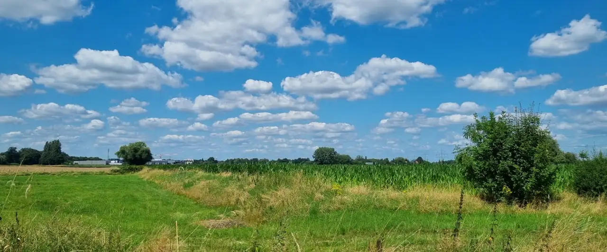
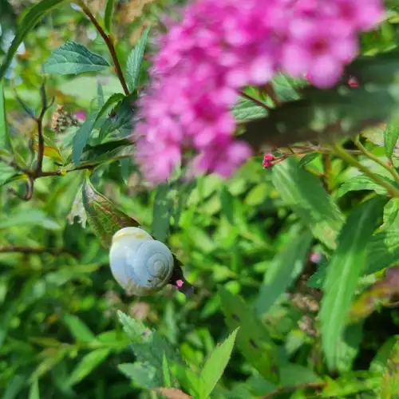
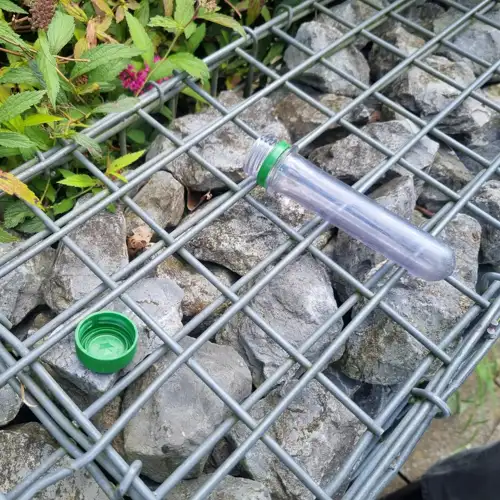
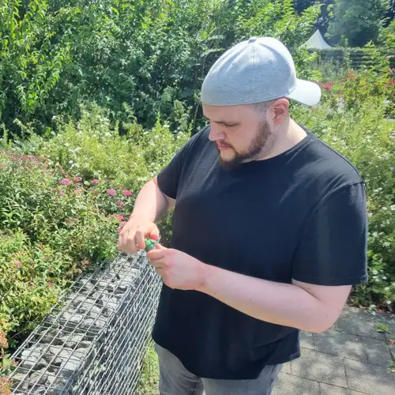
My girlfriend and I started our tour in Meerbusch in North Rhine-Westphalia. The first cache was hidden behind a stone fence, hidden beneath a bush.
We tried to avoid people seeing us, luckily, it was a cloudy day with not many people around. The so called 'muggles', people who do not know what
geocaching is, are not allowed to see us as the cache could be damaged by them.
We tried to avoid people seeing us, luckily, it was a cloudy day with not many people around. The so called 'muggles', people who do not know what
geocaching is, are not allowed to see us as the cache could be damaged by them.
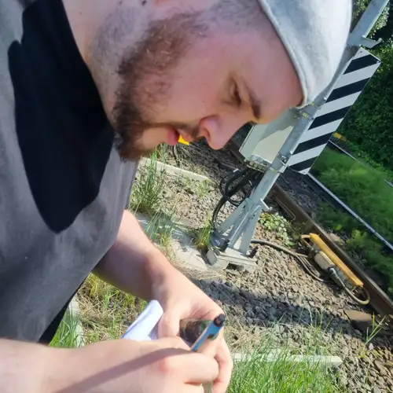
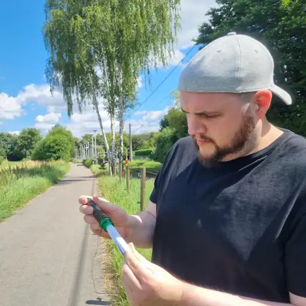
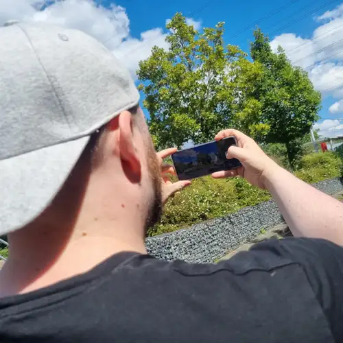
The next cache was hidden underneath a rock next to the train tracks coming from the station next to us.
It was a "petling". A PET bottle that was not blown in shape yet. Those are common containers to hide geocaches in.
When we were done, I took a photo of the train station to mark the start of our journey.
It was a "petling". A PET bottle that was not blown in shape yet. Those are common containers to hide geocaches in.
When we were done, I took a photo of the train station to mark the start of our journey.
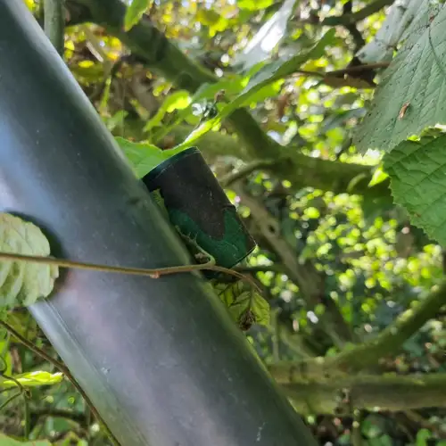
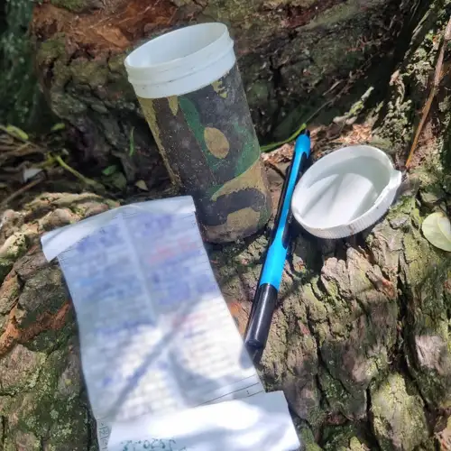
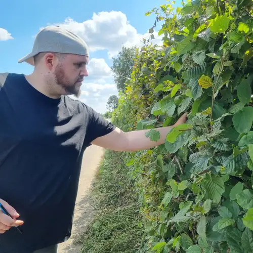
Some people think that the famous containers for old camera films serve no purpose anymore.
Geocachers see this a bit different. This was shown with our next cache that was hidden in one of those containers.
It was well hidden in a hedge at the edge of the road. It was right in the middle of an open field for everyone
to see us. Luckily, nobody noticed us.
Geocachers see this a bit different. This was shown with our next cache that was hidden in one of those containers.
It was well hidden in a hedge at the edge of the road. It was right in the middle of an open field for everyone
to see us. Luckily, nobody noticed us.
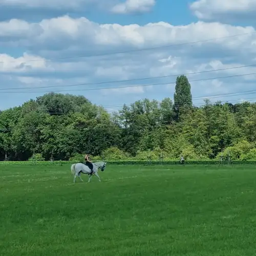
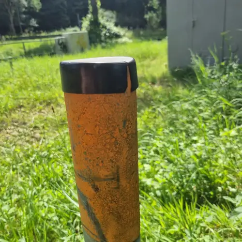
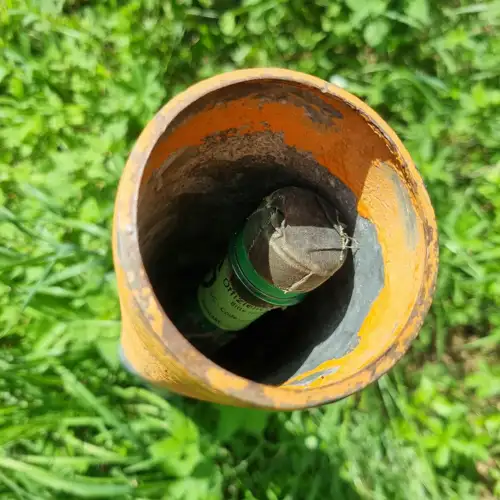
As we found the next "petling" in a pole standing right next to the walkway, we were able to watch a girl
riding on her horse on the field. Quite a nice sight in these great weather conditions.
Another geocache was found and logged.
riding on her horse on the field. Quite a nice sight in these great weather conditions.
Another geocache was found and logged.
 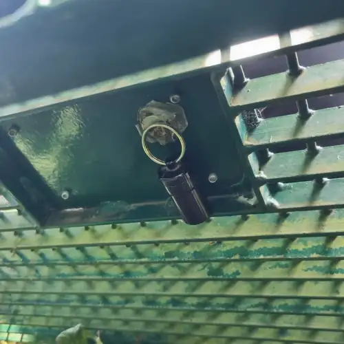
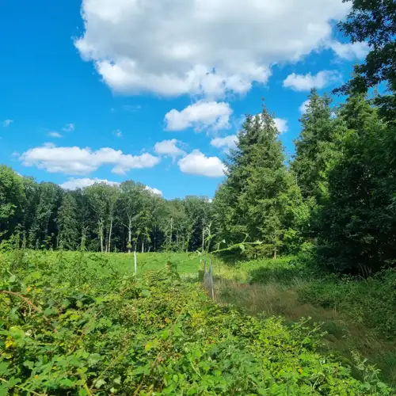
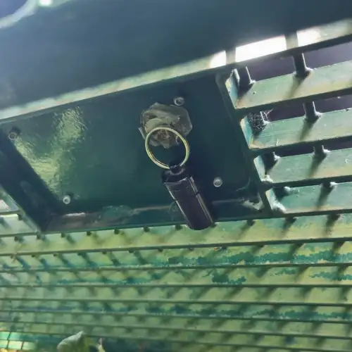
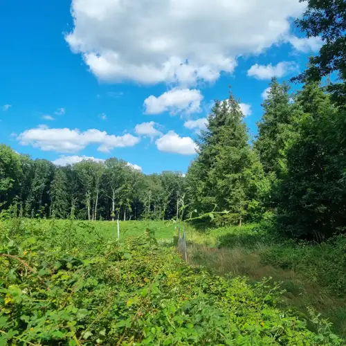
When the small trip slowly came to its end, we rested on a bench and took in a breath of fresh air.
Right under our bench, we found the last geocache of the trip, attached to the bench itself.
After the tour, we headed to our favourite ice cream parlor and enjoyed our deserved reward.
Right under our bench, we found the last geocache of the trip, attached to the bench itself.
After the tour, we headed to our favourite ice cream parlor and enjoyed our deserved reward.
Adventure 2 - Small trip in Solingen
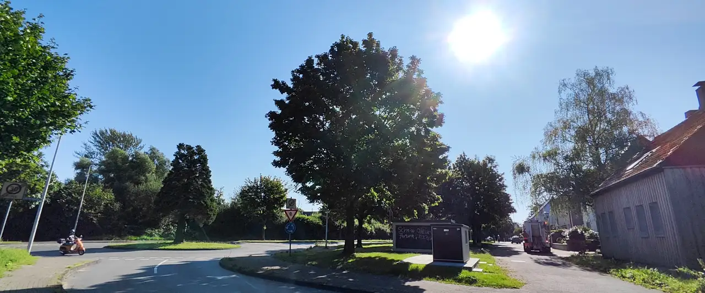
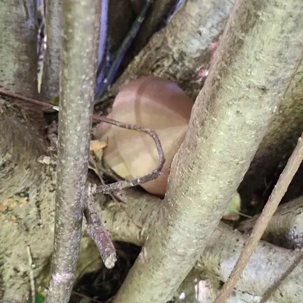
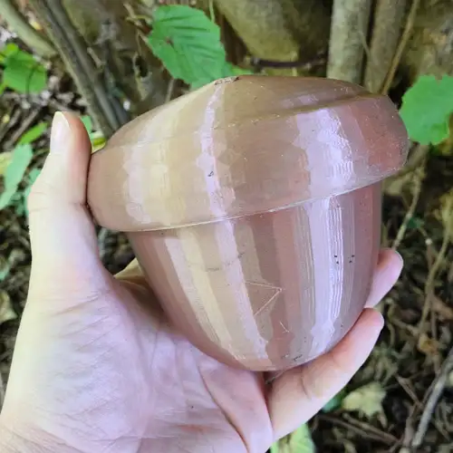
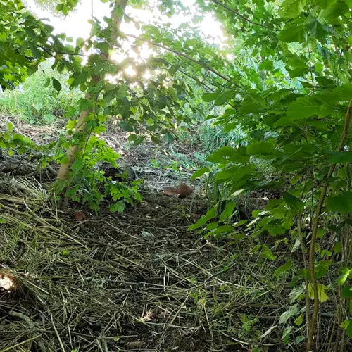
The start of our second adventure in Solingen began with qutie a laugh. When we took a look at the title of the cache, it
said "Scrat's winter supplies". Once we found the geocache, we knew where the name came from. The log was hidden
in a big acorn. We fought our way back through the brush and only got cut by sharp twigs twice!
said "Scrat's winter supplies". Once we found the geocache, we knew where the name came from. The log was hidden
in a big acorn. We fought our way back through the brush and only got cut by sharp twigs twice!
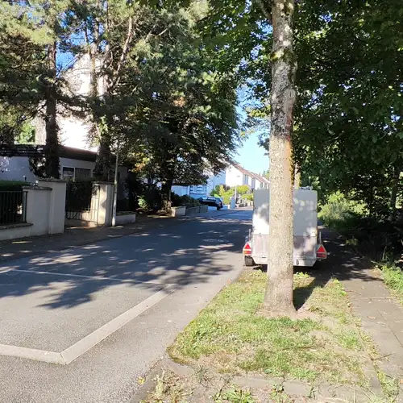
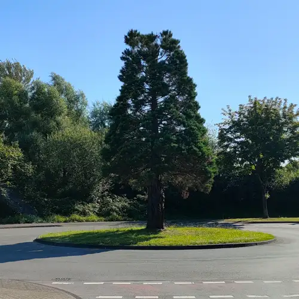
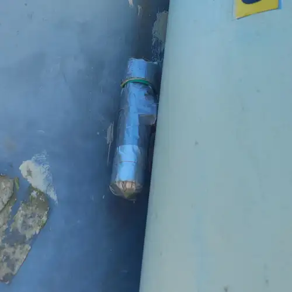
We went into an idyllic part of the city with lots of green around us. Why breath exhaust gases when you can
enjoy a refreshing trip in the nature. Hidden behind a traffic sign, we found a pretty well hidden "petling".
Some of those have magnets attached to them so they can be hidden in the most crazy places.
This one was wrapped in grey tape. Probably to protect it from rain and other influences.
enjoy a refreshing trip in the nature. Hidden behind a traffic sign, we found a pretty well hidden "petling".
Some of those have magnets attached to them so they can be hidden in the most crazy places.
This one was wrapped in grey tape. Probably to protect it from rain and other influences.
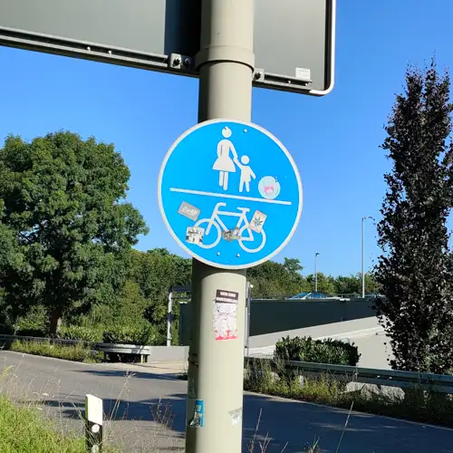
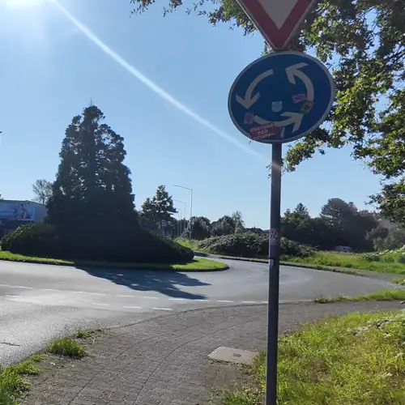
We started to recognize a pattern, as the next cache was also hidden behind a walkway traffice sign.
In some cases, people hide many geocaches in one area of the town and even place them in similar places
or adjust the container of the caches to be identical. As we already knew what awaited us, this geocache
was found pretty quickly and added to our logs.
In some cases, people hide many geocaches in one area of the town and even place them in similar places
or adjust the container of the caches to be identical. As we already knew what awaited us, this geocache
was found pretty quickly and added to our logs.
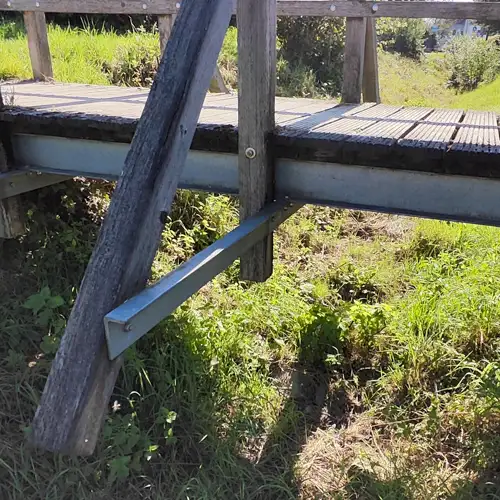
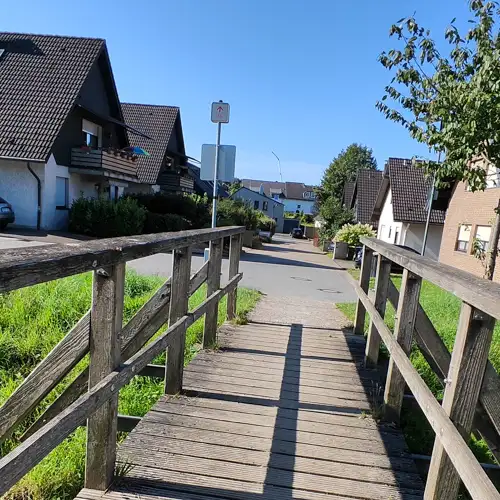
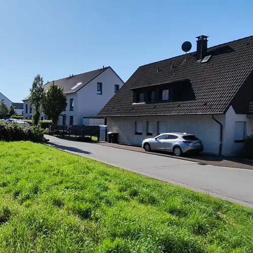
The last cache on this tour was sadly a missed one. It was said to be hidden under a wooden bridge connecting to streets,
but sadly it seemingly was stolen or damaged. In cases like that, the owner of the cache needs to be informed to take
a look at the spot where they hid it. We still were able to enjoy the cozy area with beautiful houses all around.
but sadly it seemingly was stolen or damaged. In cases like that, the owner of the cache needs to be informed to take
a look at the spot where they hid it. We still were able to enjoy the cozy area with beautiful houses all around.